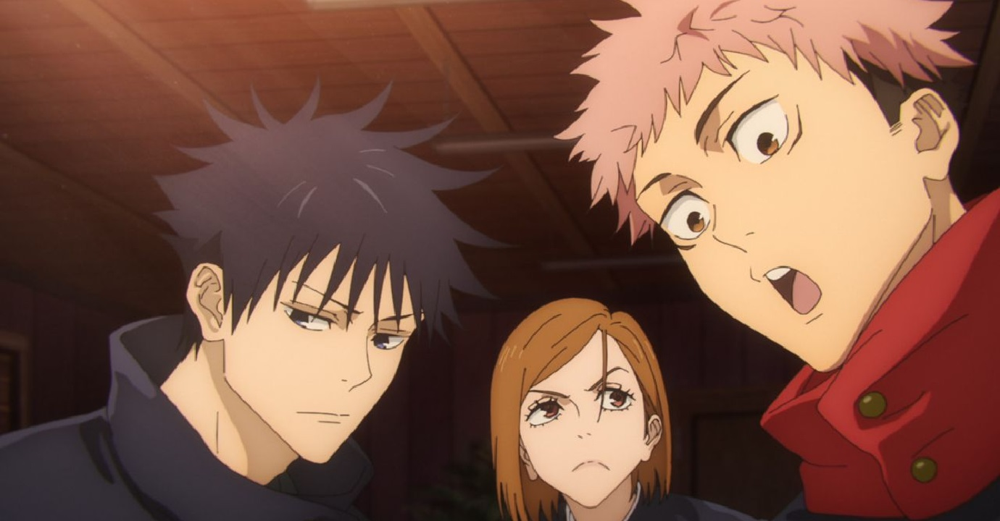

Os fãs de Jujutsu Kaisen já podem comemorar: a franquia retorna aos cinemas com o aguardado Jujutsu Kaisen: Execução, previsto para estrear em 20 de novembro de 2025. O novo longa revisita o Arco do Incidente de Shibuya com cenas inéditas e promete conectar os eventos da segunda à terceira temporada do anime, que deve chegar em 2026.
Mais do que um simples resumo dos acontecimentos, o longa chega como um verdadeiro evento, oferecendo uma nova experiência visual e emocional do Arco do Incidente de Shibuya, um dos momentos mais intensos e trágicos do anime. Mas não para por aí. Além de revisitar a batalha que mudou o rumo da história, o filme traz um teaser inédito dos dois primeiros episódios da terceira temporada, preparando o público para o próximo capítulo da jornada de Yuji Itadori e os poucos amigos que restaram.
Shibuya em colapso: o caos e as consequências
Durante o Halloween, o distrito de Shibuya, normalmente vibrante e iluminado, é envolto por um véu amaldiçoado que transforma a cidade em um campo de guerra. Satoru Gojo, o mais poderoso feiticeiro jujutsu, enfrenta hordas de espíritos malignos enquanto Yuji, Megumi e Nobara lutam para proteger os civis.
No centro de tudo está Kenjaku, o misterioso feiticeiro responsável por orquestrar o desastre. Seu plano dá origem ao Culling Game, um novo arco em que o Japão é dividido em colônias dominadas por maldições e feiticeiros rivais.
Entre as surpresas está o retorno de Yuta Okkotsu, protagonista de Jujutsu Kaisen 0, agora encarregado de uma missão devastadora: executar Yuji Itadori, acusado de contribuir para as tragédias recentes. Essa nova ordem coloca antigos aliados em lados opostos e redefine o equilíbrio do mundo jujutsu.
Jujutsu Kaisen especial para o cinema
Jujutsu Kaisen: Execução não é apenas um “melhor de” da segunda temporada. A Toho Animation confirmou que o filme terá cenas retrabalhadas da série e sequências inéditas criadas especialmente para o cinema, com o objetivo de dar fluidez à transição entre os arcos e reforçar o impacto emocional das perdas e batalhas de Shibuya.
Para quem acompanhou a série, o filme é a chance de revisitar os acontecimentos sob uma nova perspectiva; para quem está chegando agora, é o ponto de partida ideal para mergulhar nesse universo sombrio e fascinante.